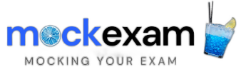

<div class="root">

    <nav class="navbar row ps-4">
        <div class="col-4 d-flex d-flex align-items-center ">
          <app-offcanvas></app-offcanvas>
          <span class="logo ms-2" routerLink="/certifications">
              
          </span>
        </div>

        <div class="col-3 right-btn">
            <div class="item d-flex justify-content-around">
                <div class="add-button d-flex align-items-center justify-content-center"
                     routerLink="/create-certification" data-bs-toggle="tooltip" title="create certification">
                    <i class="bi bi-plus" ></i>
                </div>
                <div class="user-image  shadow-sm">
                    <i class="bi bi-person"></i>
                </div>
            </div>

        </div>

    </nav>
</div>


